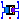
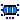

Components to be used in examples
Extends from Modelica.Icons.Package (Icon for standard packages).
| Name | Description |
|---|---|
|  Transformer1PhaseWithHysteresis | Single-phase transformer with ferromagnetic core and hysteresis |
|  Transformer3PhaseYyWithHysteresis | Three-phase transformer in Yy configuration |
Single-phase transformer with ferromagnetic core and hysteresis
Simple model of a single-phase transformer with a primary and a secondary winding and a magnetic core. The core is modeled with GenericHystTellinenEverett flux tube elements. Thus, this element considers static and dynamic hysteresis.
|
|
Extends from Interfaces.ConditionalHeatPort (Partial model to include a conditional HeatPort in order to describe the power loss via a thermal network).
| Name | Description |
|---|---|
| Electrical | |
| Primary winding | |
| N1 | Primary turns |
| L1 | Mean primary turn length [m] |
| d1 | Wire diameter of primary turns [m] |
| rho1 | Resistivity of primary winding (at 20degC) [Ohm.m] |
| alpha1 | Temperature coefficient of primary turns [1/K] |
| Secondary winding | |
| N2 | Secondary turns |
| L2 | Mean secondary turn length [m] |
| d2 | Wire diameter of secondary turns [m] |
| rho2 | Resistivity of secondary winding (at 20degC) [Ohm.m] |
| alpha2 | Temperature coefficient of secondary turns [1/K] |
| Core | |
| Geometry | |
| l1 | Mean Length l1 of core [m] |
| |
| l2 | Mean Length l2 of core [m] |
| a | Height of core [m] |
| b | Width of core [m] |
| Material | |
| mat | Parameter set of ferromagnetic Hysteresis |
| Initialization | |
| MagRelStart | Initial magnetization of Core (-1..1) |
| MagRelFixed | Fixed |
| HStart | Initial magnetic field strength of Core [A/m] |
| HFixed | Fixed |
| I1Start | Initial primary current through winding [A] |
| I1Fixed | Fixed |
| Losses and heat | |
| HeatPort | |
| useHeatPort | = true, if HeatPort is enabled |
| T | Fixed device temperature if useHeatPort = false [K] |
| Eddy currents | |
| EddyCurrents | Enable eddy currents |
| sigma | Conductivity of core material [S/m] |
| t | Thickness of lamination [m] |
| Leakage | |
| L_l1 | Length of leakage of primary Winding [m] |
| A_l1 | Cross section of leakage of primary Winding [m2] |
| mu_rel1 | Constant relative permeability of primary leakage (>0 required) |
| L_l2 | Length of leakage of secondary Winding [m] |
| A_l2 | Cross section of leakage of secondary Winding [m2] |
| mu_rel2 | Constant relative permeability of secondary leakage (>0 required) |
| Name | Description |
|---|---|
| n1 | Negative pin of primary winding |
| p1 | Positive pin of primary winding |
| n2 | Negative pin of secondary winding |
| p2 | Positive pin of secondary winding |
| heatPort |
Three-phase transformer in Yy configuration
Simple model of a three-phase transformer with primary and a secondary windings and a magnetic E-I shaped core. The core is modeled with GenericHystTellinenEverett flux tube elements. Thus, this model considers static and dynamic hysteresis as well as initial flux.

|
Extends from Interfaces.ConditionalHeatPort (Partial model to include a conditional HeatPort in order to describe the power loss via a thermal network).
| Name | Description |
|---|---|
| Electrical | |
| Primary winding | |
| N1 | Primary turns |
| L1 | Mean primary turn length [m] |
| d1 | Wire diameter of primary turns [m] |
| rho1 | Resistivity of primary winding (at 20degC) [Ohm.m] |
| alpha1 | Temperature coefficient of primary turns [1/K] |
| Secondary winding | |
| N2 | Secondary turns |
| L2 | Mean secondary turn length [m] |
| d2 | Wire diameter of secondary turns [m] |
| rho2 | Resistivity of secondary winding (at 20degC) [Ohm.m] |
| alpha2 | Temperature coefficient of secondary turns [1/K] |
| Core | |
| Geometry | |
| l1 | Mean length l1 of core [m] |
| |
| l2 | Mean length l2 of core [m] |
| a | Height of core [m] |
| b | Width of core [m] |
| Material | |
| mat | Core Material |
| Initialization | |
| MagRelStart[3] | Initial magnetization of Core (-1..1) |
| MagRelFixed[3] | Fixed |
| HStart[3] | Initial magnetic field strength of Core [A/m] |
| HFixed[3] | Fixed |
| I1Start[3] | Initial current of primary Windings [A] |
| I1Fixed[3] | Fixed |
| I2Start[3] | Initial current of secondary Windings [A] |
| I2Fixed[3] | Fixed |
| Losses and heat | |
| HeatPort | |
| useHeatPort | = true, if HeatPort is enabled |
| T | Fixed device temperature if useHeatPort = false [K] |
| Eddy currents | |
| EddyCurrents | Enable eddy currents |
| sigma | Conductivity of core material [S/m] |
| t | Thickness of lamination [m] |
| Leakage | |
| L_l1 | Length of leakage of primary Winding [m] |
| A_l1 | Cross section of leakage of primary Winding [m2] |
| mu_rel1 | Constant relative permeability of primary leakage (>0 required) |
| L_l2 | Cross section of leakage of secondary Winding [m] |
| A_l2 | Length of leakage of secondary Winding [m2] |
| mu_rel2 | Constant relative permeability of secondary leakage (>0 required) |
| Name | Description |
|---|---|
| heatPort | |
| p1 | Primary winding 1 |
| p2 | Primary winding 2 |
| p3 | Primary winding 3 |
| n1 | Secondary winding 1 |
| n2 | Secondary winding 2 |
| n3 | Secondary winding 3 |
| starPoint2 | Star point of secondary windings |
| starPoint1 | Star point of primary windings |